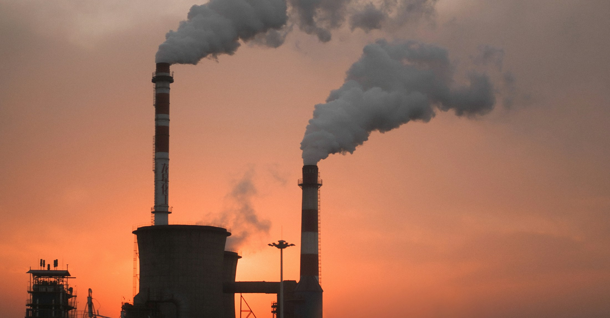
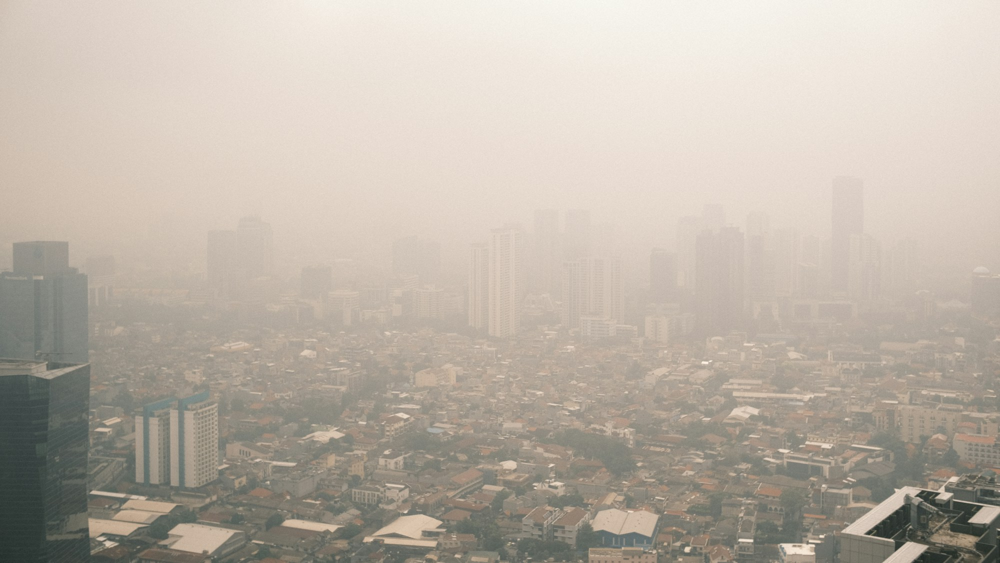
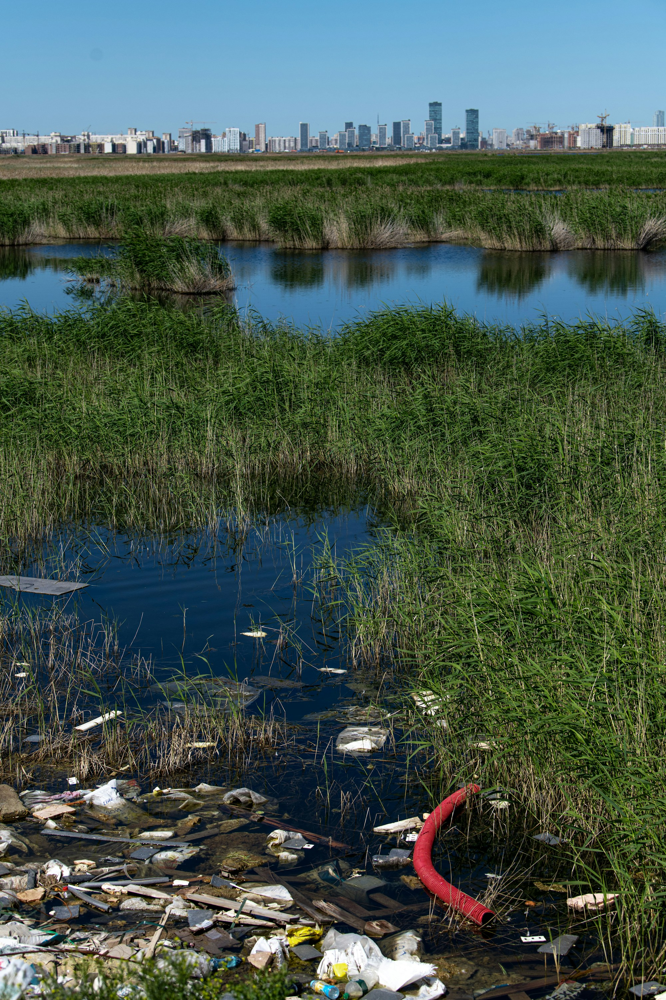
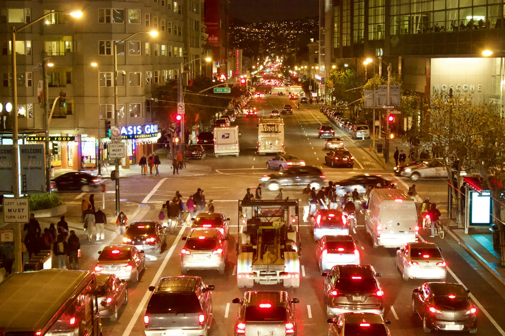

Una guía visual sobre aquello que vertemos, respiramos, enterramos y normalizamos.
Contaminación
La contaminación no siempre tiene un color o un olor. A veces es una nube, una botella, un ruido constante o una sustancia que permanece en el suelo durante años.

No existe “lejos”
Todo residuo termina en algún lugar. A menudo vuelve a nosotros.
Aire
Partículas y gases que viajan con el viento y entran al cuerpo con cada respiración.

02Agua
Residuos, químicos y nutrientes que alteran ríos, lagos, costas y acuíferos.

03Plástico
Objetos de uso breve que se fragmentan y permanecen durante mucho tiempo.
 04
04Suelo
Desechos y sustancias que modifican la tierra donde cultivamos y construimos.
 05
05Urbana
Ruido, luz y tráfico que transforman la ciudad y afectan el descanso cotidiano.

Lo invisible también cuenta.
Medir, reducir y prevenir funciona mejor que limpiar después. Cada capítulo explica el problema y propone acciones concretas para hogares, comunidades y ciudades.